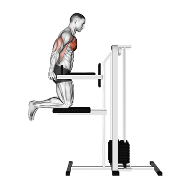

가슴 운동
플랫 벤치 프레스
기본 설명
우선, 가장 대표적인 운동인 벤치 프레스입니다.
벤치프레스는 3대 운동 중 하나로써 복합다관절 운동이며 주동근으로는 대흉근,
협응근으로는 삼두근과 전면삼각근이 사용됩니다.
대흉근은 상부, 중앙, 하부 총 3가지 갈래로 나뉩니다.
플랫 벤치프레스는 이 중에 중앙 대흉근에 초점을 맞춘 운동입니다.
플랫 벤치프레레스의 운동 자세를 이미지로 보여드리겠습니다.

🧭 운동 방법
- 벤치에 등을 대고 눕습니다. 이 때, 허리는 약간의 아치형태를 만듭니다.
- 어깨보다 살짝 넓게 바벨을 잡습니다.
- 들어올린 바벨을 밑가슴 부분까지 천천히 내립니다.
- 바벨이 밑가슴에 닿을때 까지 내리고, 가슴에 닿으면 들어올립니다.
이 때, 바벨을 들어올린 초기상태는 앞으로 나란히한 상태이며며
바벨을 내릴 때만 사선으로 내리면서 밑 가슴에 닿는 느낌으로 가져가야 합니다. - 호흡은 바벨을 내릴때 들이쉬고, 올릴때 내쉽니다.
⚠️ 주의 사항
- 허리 아치를 형성할때 과하게 허리가 꺾이지 않게 주의합니다.
과신전 된 허리는 척추에 부담을 주며, 허리근육을 자극할 수 있습니다. - 다리를 땅바닥에 단단히 고정하셔야 합니다.
상체의 좌우 균형을 잡아주는것이 하체와 둔근이기에
하체를 단단히 고정하지 않을 경우 부상 혹은 근육비대칭을 유발할 수 있습니다. -
바벨에 원판을 2개 이상 끼웠을 경우엔 마구리를 사용하도록 합니다.
아무리 균형을 잘 잡는 사람이여도, 한계가 오면 무너질 수 있습니다.
자세가 무너져도 원판이 빠지지 않게 마구리를 이용해주시길 바랍니다. -
세이프티바를 반드시 이용합니다.
아무리 가동범위를 최대로 가져가고 싶다고 해도, 생명보다는 중요하지 않습니다.
한계에 마주쳤을때 바벨에 깔려 부상당하지 마시고,
미리 세이프티바를 설치해 사고를 방지합시다 !
인클라인 벤치프레스
기본 설명
인클라인 벤치 프레스는 플랫 벤치프레스의 변형이며
각도를 조금 세워 가슴 상부를 자극시키는 운동입니다.
앞으로 모든 운동에 "인클라인" 이라는 말이 붙으면
전부 가슴 상부라고 인지하시면 됩니다.
운동자세 사진 보여드리겠습니다.

🧭 운동 방법
- 벤치에 등을 완전히 기대고 눕습니다.
- 어깨보다 살짝 넓게 바벨을 잡습니다.
- 들어올린 바벨을 윗가슴(쇄골의 아래)까지 내립니다.
- 바벨이 윗가슴에 닿기 직전까지 내리고, 들어올립니다.
- 팔꿈치를 최대한 모아서 가슴근육이 사용되게 합니다.
- 호흡은 바벨을 내릴때 들이쉬고, 올릴때 내쉽니다.
⚠️ 주의 사항
- 무게를 과하게 설정할 경우 중앙 가슴보다 안정성이 낮기에
부상을 야기할 수 있습니다. - 그저 "팔꿈치를 모아 민다"라는 느낌이 아닌, 이두근이 가슴에 가까이 오며
팔이 펴진다 라고 생각해야 가슴이 자극됩니다. - 반드시 세이프티바를 사용합시다 !
디클라인 벤치 프레스
기본 설명
디클라인 벤치 프레스도 플랫 벤치프레스의 변형이며
각도를 조금 눕혀 가슴 하부를 자극시키는 운동입니다.
앞으로 모든 운동에 "디클라인" 이라는 말이 붙으면
전부 가슴 하부라고 인지하시면 됩니다.
운동자세 사진 보여드리겠습니다.
 >
>
🧭 운동 방법
- 벤치에 등을 완전히 기대고 눕습니다.
- 어깨보다 살짝 넓게 바벨을 잡습니다.
- 들어올린 바벨을 밑가슴까지 내립니다.
- 바벨이 밑가슴에 닿기 직전까지 내리고, 들어올립니다.
- 호흡은 바벨을 내릴때 들이쉬고, 올릴때 내쉽니다.
⚠️ 주의 사항
- 무게를 과하게 설정할 경우 안정성이 낮기에
부상을 야기할 수 있습니다. - 팔을 필때 최대한 쭉 펴서 진행해야 가슴 안쪽까지 자극이 전해집니다.
애매하게 펴버릴경우에는 가슴보다 다른 부위로 자극이 전해질 가능성이 높습니다.
체스트 플라이
기본 설명
체스트 플라이는 양 팔을 벌린상태에서
팔을 모으며 가슴을 수축하여 자극시키는 운동입니다.
일반적으로 가슴운동 시작 전 워밍업 혹은
가슴 운동 마무리 쥐어짜기 운동으로 많은 사람들이 하고 있습니다.
운동자세 사진 보여드리겠습니다.

🧭 운동 방법
- 등받이에 등을 완전히 기댑니다.
- 팔을 양쪽으로 벌린 상태를 유지하고
팔을 핀 상태에서 팔을 모아준다고 생각하면 가슴에 자극이 옵니다. - 호흡은 팔이 모아질때 내쉬고, 팔이 벌려질때 들이쉽니다.
⚠️ 주의 사항
- 자신의 유연성보다 너무 과하게 팔을 벌리면 가슴근육이
끊어질 수 있습니다. 적당한 가동범위로 수행하도록 합니다. - 웜업, 혹은 마무리 운동으로 이용되는 만큼
중량보다는 가벼운 무게로 반복횟수를 눌려주도록 합시다. - 기구를 놓을때 손을 확 놓아버리면 안됩니다.
힘들다고 수행도중에 놔버리면, 고정핀이 무게를 못이기고
고정이 풀려버려 근처 사람을 가격하는 등의 안전사고가
발생할 수 있습니다. 주의합시다 !
딥스
기본 설명
딥스는 맨몸운동이지만 효과가 좋기에 설명드립니다.
체중을 이용하여 가슴 하부를 자극하는 운동이며
다른 가슴 운동보다 삼두의 개입이 높아
가슴 하부 운동과 삼두근을 같이 자극하고 싶을때 하시면 좋다고 생각됩니다.
운동자세 사진 보여드리겠습니다.

🧭 운동 방법
- 딥스바에 올라서 팔로 체중을 지탱한 상태를 유지합니다.
- 팔꿈치를 최대한 안쪽으로 좁혀 줍니다.
- 배에 힘을 단단히 주어 허리가 말리거나 휘지 않게 합니다.
- 팔꿈치의 각도가 90도가 될때까지 내려갔다가 올라옵니다.
- 호흡은 올라올 때 내쉬고, 내려갈 때 들이쉽니다.
⚠️ 주의 사항
- 자신의 유연성보다 너무 과하게 내려가면면 가슴근육이
끊어질 수 있고, 전면 삼각근이 더 많이 자극될 가능성이 높습니다.
자신에게 맞는 가동범위를 이용하도록 합니다. - 체중을 이용해서 수행하는 운동인 만큼
너무 무거워서 관절부에 무리가 가는 느낌이 들면 즉시 중단해주세요. - 어시스트 머신을 이용하여 무게를 줄일 수 있습니다 !
무리하게 들다가 부상당하는 것 보다는, 어시스트 머신을
적극 이용하시는걸 추천드립니다 !
가슴 운동 루틴 예시 💪
- 체스트 플라이 - 15회 x 2세트 (워밍업)
- 벤치프레스 - 10~12회 x 3세트
- 인클라인 벤치프레스 - 10회 x 3세트
- 디클라인 벤치프레스 x 12회 x 2세트
- 딥스 x 실패지점까지 x 3세트
마무리
가장 대표적인 5가지 운동을 대흉근의 상부, 중부, 하부로
나누어 설명해드렸습니다. 위에 설명한 운동만 하는 것으로도
충분히 좋은 몸을 만드실 수 있으니 거침없이 시도해보시길 바라겠습니다.
더 다양한 운동도 많이 있기 때문에, 관심이 생긴다면 저희 헬스장으로 연락주세요.